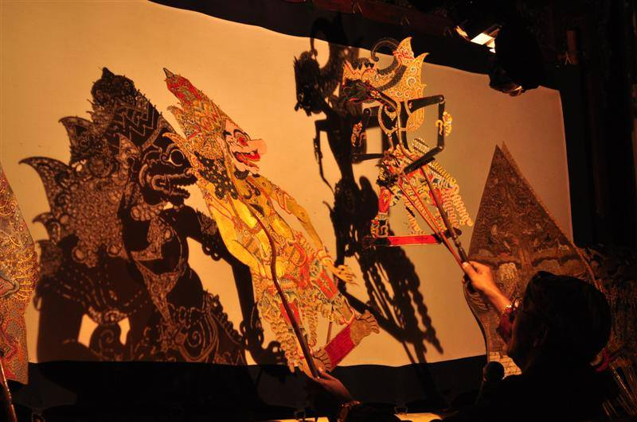
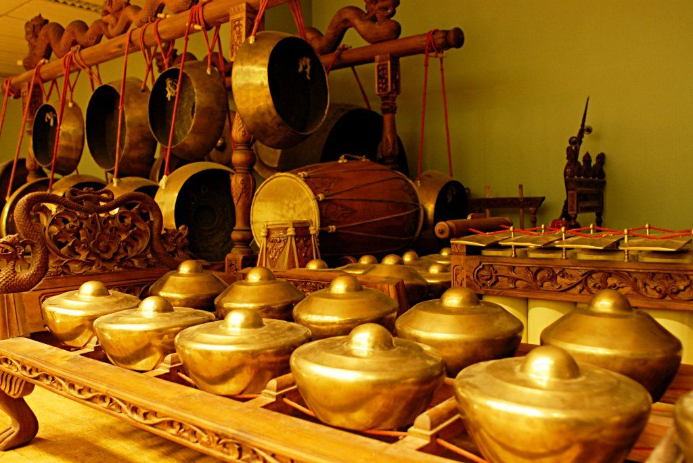

Menjelajah Jawa Tengah
Menjelajahi Kekayaan Budaya Jawa Tengah
Mengenal, melestarikan, dan memperkenalkan kekayaan budaya Jawa Tengah melalui seni, tradisi, kuliner, bahasa, serta warisan leluhur yang masih hidup hingga saat ini.
Portal Budaya Nusantara hadir sebagai jembatan antara generasi penerus dengan kekayaan warisan leluhur yang tak ternilai. Kami percaya bahwa identitas bangsa yang kuat dibangun di atas pondasi pemahaman dan kebanggaan terhadap akar budaya sendiri.
Bhinneka Tunggal Ika bukan sekadar semboyan — ia adalah cara hidup yang telah diwariskan selama ribuan tahun, menjadikan Indonesia sebagai negara dengan keberagaman budaya paling kaya di dunia.
Dari seni pertunjukan hingga kerajinan tangan, setiap budaya menyimpan cerita yang layak dikenang.

Seni bayangan tertua di dunia, mengisahkan Mahabharata & Ramayana selama semalam suntuk. Diakui UNESCO sebagai Warisan Budaya Tak Benda.
Selengkapnya →Seni melukis di atas kain dengan canting dan malam, menghasilkan ribuan motif yang masing-masing mengandung filosofi mendalam.
Selengkapnya →
Orkestra perkusi yang harmonis, memadukan gong, kenong, saron, dan rebab dalam irama yang menghipnotis jiwa dan raga.
Selengkapnya →Dari Tari Kecak Bali hingga Tari Saman Aceh, setiap gerakan adalah bahasa tubuh yang menuturkan sejarah dan spiritualitas.
Selengkapnya →Kain tenun dengan motif geometris sakral yang dikerjakan berbulan-bulan — setiap helai benang adalah doa yang dipanjatkan.
Selengkapnya →Dari Aceh hingga Papua, setiap pulau menyimpan khazanah budaya yang tak ada habisnya.
17.504 Pulau · 5 Kepulauan Besar
Jangan lewatkan perayaan budaya terbaik dari seluruh penjuru Nusantara.
Kebudayaan adalah jiwa sebuah bangsa. Jika jiwa itu hilang, hilang pulalah bangsa itu dari muka bumi.
— Bung Karno, Presiden Pertama RI
Bersama-sama menjaga nyala api kebudayaan untuk generasi yang akan datang.
Mendokumentasikan dan mendigitalisasi ribuan artefak budaya, teks kuno, dan rekaman seni pertunjukan dalam format yang dapat diakses semua kalangan.
Telusuri Arsip →Mendukung generasi penerus pengrajin batik, penari tradisional, dan dalang muda agar warisan tak putus di tangan mereka yang mencintainya.
Daftar Beasiswa →Platform streaming pertunjukan budaya live dari seluruh Indonesia, menjangkau diaspora Indonesia di 50+ negara tanpa batas jarak dan waktu.
Tonton Festival →